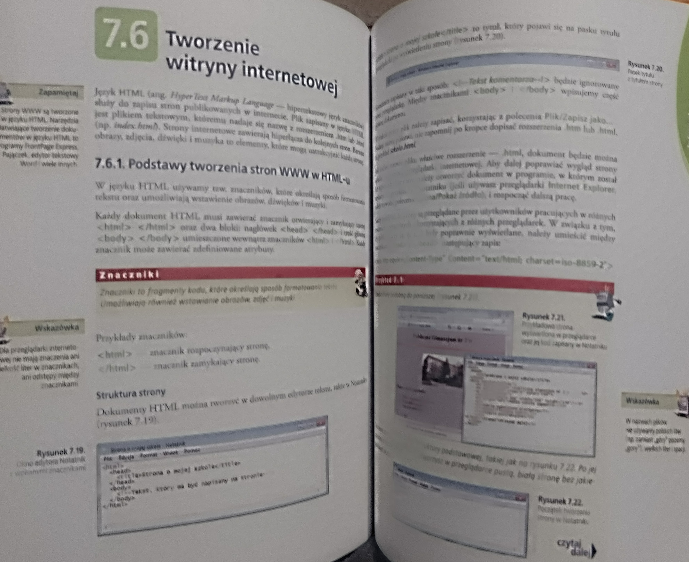
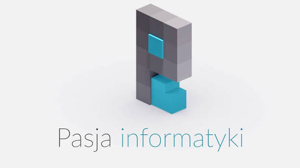

Początki
Jak można czasem zauważyć, człowiek przy pierwszej styczności z nową wiedzą może się do niej nie przekonać i potzrebuje trochę czasu, aby zrozumieć, że chce ją poznać. Tak było u mnie z programowaniem...
Epizod gimnazjalny
W gimnazjum po raz pierwszy właśnie zetknąłem się z czymś takim, jak tworzenie stron internetowych. Było to w miarę ciekawe dla mnie, ale nie ciekawsze niż jakiekolwiek inne tematy, które po prostu nie były jakoś bardzo trudne, zwłaszcza, że tematowi programowania poświęcono w podręczniku bardzo mało stron. To był czas, w którym takie rzeczy dopiero pojawiały się w szkołach, jako część programu nauczania. Tak więc poznałem podstawowe znaczniki i ich atrybuty w HTML, ale była to dla mnie tylko miła ciekawostka... nic więcej. Patrząc na tamten czas dzisiaj, dostrzegam, jak bardzo toporne i pozbawione zbawiennego wpływu CSS były strony, które robiliśmy z kolegami na lekcji.

Zapomnienie
Po ukończeniu gimnazjum przyszła oczywiście pora na liceum. Liceum ogólnokształcące z klasą o profilu lingwistycznym, więc webdeweloperka poszła w zapomnienie, ponieważ ani wcześniej mnie nie porwała jakoś wyraźnie, żeby miała się wybijać ponad wszelką inną wiedzę informatyczną, ani też na kolejnym etapie nauki tejże wiedzy nie uświadczyłem. Nie utrwalana wiedza, nie będąca dla mnie ważniejszą niż inne tematy na lekcjach informatyki, będące tylko miłą odmianą w stosunku do trudnych zagadnień - to musiało skutkować zapomnieniem!
Pewnego dnia
Nie pamiętam dokładnie, kiedy był ten dzień, o którym mowa, ale to właśnie ów dzień był dla mnie przełomowy. Stwierdziłem, że... kocham tworzyć... po prostu kurdę uwielbiam tworzyć i pragnę robić to na wszelkie możliwe sposoby. A więc sięgnąłem po podręcznik i odświeżylem wiedzę z zakresu programowania. Zacząłem też gorączkowo szukać bardziej aktualnych źródeł informacji. Szukałem na YouTube, bo tak jest najszybciej i jak mniemałem, za darmo. I trafiłem na pewien naprawdę obiecujący kanał!
Pasja Informatyki
Mirosław Zelent to autor kanału Pasja Informatyki, na którym dzieli się swoją wiedzą programistyczną, ale też tą dotyczącą filozofii życia i samorozwoju. Wiedza na kursach tego Youtubera jest bardzo dobrze uporządkowana i przystępnie przekazywana. Pan Zelent dba o to, aby niczego nie pozostawić przypadkowi, tzn., dodaje pewne kluczowe dla elegancji oraz funkcjonalności tworzonych stron własne zasady, które wypływają z jego troski i szacunku do klientów, jak i siebie samego. Zanim na dobre zadomowiłem się na tym kanale, popełniłem jeden niemały błąd...
